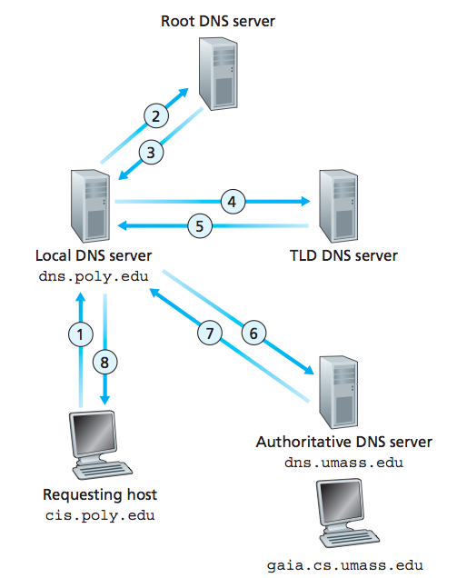
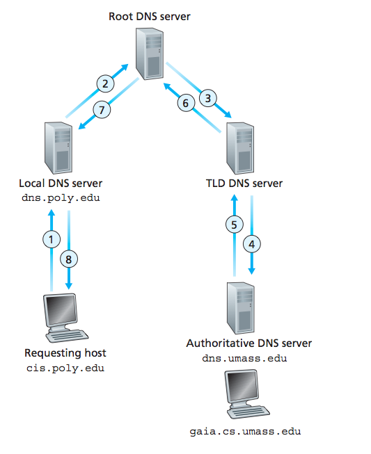

DNS查询方式浅谈
今天试着下载几个软件（KeePassX, Atom），居然全都因为伟大的墙而失败，实在是不想说什么了。郁闷之时想起前几天偶然间看到了OpenerDNS，正好试一试好不好用，把DNS改完之后，居然真的好用，点个赞。可以直接上Facebook，Twitter了，Youtube能进页面，视频没办法加载，基本跟以前改完Hosts的效果是一样的，不过这个比改Hosts省心多了。
改完之后想看一下这个DNS返回的地址到底是什么，按照计算机网络课上讲的，在命令行里使用nslookup，没想到却返回了这样的结果：
>nslookup twitter.com
;; Got recursion not available from 42.120.21.30, trying next server
Server: 223.5.5.5
Address: 223.5.5.5#53
Non-authoritative answer:
Name: twitter.com
Address: 59.24.3.173
似乎是DNS服务器拒绝了递归查询的请求，于是nslookup转去问下一个DNS服务器。
查询nslooup的man文档之后，发现nslookup默认采用递归查询，可以通过参数来设置，指定不使用递归查询，像下面这样，就可以得到结果了：
>nslookup -norec twitter.com
Server: 42.120.21.30
Address: 42.120.21.30#53
Non-authoritative answer:
Name: twitter.com
Address: 198.98.52.15
另外，还可以使用dig命令来查询
>dig twitter.com
; <<>> DiG 9.8.3-P1 <<>> twitter.com
;; global options: +cmd
;; Got answer:
;; ->>HEADER<<- opcode: QUERY, status: NOERROR, id: 8213
;; flags: qr rd; QUERY: 1, ANSWER: 1, AUTHORITY: 0, ADDITIONAL: 0
;; WARNING: recursion requested but not available
;; QUESTION SECTION:
;twitter.com. IN A
;; ANSWER SECTION:
twitter.com. 600 IN A 198.98.52.15
;; Query time: 70 msec
;; SERVER: 42.120.21.30#53(42.120.21.30)
;; WHEN: Sun Jun 29 20:26:48 2014
;; MSG SIZE rcvd: 45
那么递归方式和非递归方式到底有什么区别呢？一图胜千言，借用《计算机网络：自顶向下方法》的一张图来说明

这张图中cis.poly.edu向dns.poly.edu发出的是递归查询请求，而剩下的三个查询是迭代查询。
简单说来，递归查询时每个DNS服务器都以自己的名义向下一个服务器发送DNS请求（如果它不知道查询结果的话），直到得到结果。如果所有的查询都是递归的，那么DNS服务器之间将会形成一个如同深度搜索一样的查询链（递归的含义也正是如此，抱着不查询到结果不死心的态度，使查询深度不断增加，得到结果之后再依次将结果返回），像下图这样：

而使用非递归查询，也就是迭代查询，DNS服务器的“心态”比递归查询时更好了，如果一个DNS服务器不知道结果，它不会接着问其他的服务器，而是告诉请求者“我这里没有你想要的结果，你可以去xxx那里看看”。如第一个图中所展示的那样。
一般情况下，主机向本地DNS发出的请求是递归查询，狠心地告诉本地DNS不查到结果就不要回来，而本地DNS向根域名服务器发出的查询通常是迭代查询，根域名服务器毕竟是老大级别的，不愿意自己出力，而只是告诉你下一步该去哪儿查（重指引）。
尽管有了这些关于DNS查询的知识，我还是不太理解为什么OpenerDNS不使用递归查询，想象中OpenerDNS应该是本地DNS，同时为了防止DNS污染，所有的请求应该都是由它自己来处理的，那么递归和非递归查询之间的区别似乎并不大，因为它已经知道结果了，也就没有必要向别的服务器发查询请求了。可能还是我学识不够，等以后有时间再研究一下。